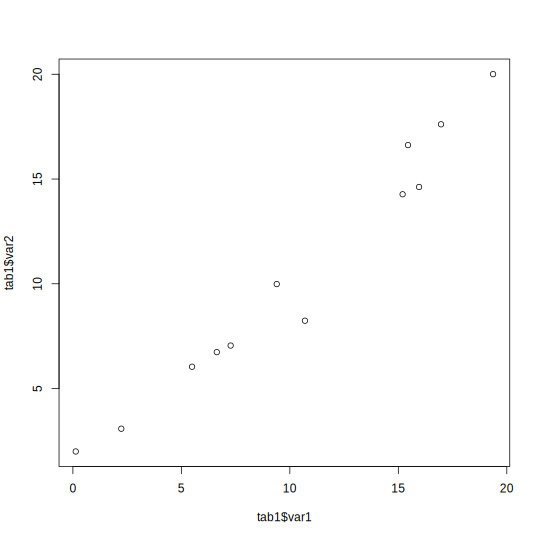
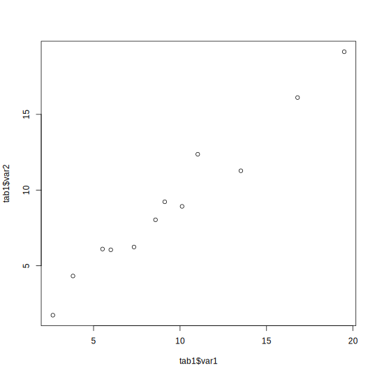

3.2 Exercices
Dans cette section nous poursuivons l’introduction à R Markdown entamée dans la section Exercices du module 2.
Rappelons les objectifs de cette introduction.
- Décrire en quoi consiste R Markdown;
- Décrire les liens entre R, Markdown et Pandoc;
- Utiliser la syntaxe Pandoc Markdown de base;
- Créer des documents dynamiques avec la bibliothèque
rmarkdown.
Cette introduction à RMarkdown a été rédigée par Kevin Cazelles, collobateur clé à réalisation de ce cours. Kevin est un chercheur en écologie computationnelle et fervent utilisateur des outils pour la science ouverte. Allez voir ses travaux sur son site https://kevcaz.insileco.io/ et son profil GitHub https://github.com/KevCaz.
3.2.1 Le variante Pandoc de Markdown
Dans cette partie, nous détaillons les éléments de formatage du texte proposés par la syntaxe Pandoc de Markdown26
Informations de départ
De façon générale, nous écrivons du texte dans un fichier R Markdown de la même façon que nous le ferions dans un document Word. Nous pouvons, par exemple, écrire des accents français sans problème.
Les paragraphes
Pour créer des paragraphes, il faut ajouter une ligne (ou plus) vide entre les paragraphes. Ainsi, avec les lignes suivantes :
Un datum est un système de référence qui détermine la position
d’un ellipsoïde sur la Terre : c’est-à-dire son origine par rapport
au centre du globe, ainsi que son orientation.
Les datums géocentriques sont associés à des ellipsoïdes
globaux. Ce sont des systèmes de référence terrestres globaux
dont l’origine correspond au centre de masse de la Terre.nous obtenons :
Un datum est un système de référence qui détermine la position d’un ellipsoïde sur la Terre : c’est-à-dire son origine par rapport au centre du globe, ainsi que son orientation.
Les datums géocentriques sont associés à des ellipsoïdes globaux. Ce sont des systèmes de référence terrestres globaux dont l’origine correspond au centre de masse de la Terre.
Notez qu’avec un simple retour à la ligne, aucun saut de ligne n’est inséré. Les paragraphes sont alors affichés bout à bout. Par exemple, ce texte:
Un datum est un système de référence qui détermine la position
d’un ellipsoïde sur la Terre : c’est-à-dire son origine par rapport
au centre du globe, ainsi que son orientation.
Les datums géocentriques sont associés à des ellipsoïdes
globaux. Ce sont des systèmes de référence terrestres globaux
dont l’origine correspond au centre de masse de la Terre.s’affiche comme ceci:
Un datum est un système de référence qui détermine la position d’un ellipsoïde sur la Terre : c’est-à-dire son origine par rapport au centre du globe, ainsi que son orientation. Les datums géocentriques sont associés à des ellipsoïdes globaux. Ce sont des systèmes de référence terrestres globaux dont l’origine correspond au centre de masse de la Terre.
Il est cependant possible d’ajouter un retour à la ligne en utilisant un retour à la ligne et tabulation à la fin du premier paragraphe. Par exemple, ce texte:
Un datum est un système de référence qui détermine la position
d’un ellipsoïde sur la Terre : c’est-à-dire son origine par rapport
au centre du globe, ainsi que son orientation.
Les datums géocentriques sont associés à des ellipsoïdes
globaux. Ce sont des systèmes de référence terrestres globaux
dont l’origine correspond au centre de masse de la Terre.s’affiche comme ceci:
Un datum est un système de référence qui détermine la position d’un ellipsoïde sur la Terre : c’est-à-dire son origine par rapport au centre du globe, ainsi que son orientation.
Les datums géocentriques sont associés à des ellipsoïdes globaux. Ce sont des systèmes de référence terrestres globaux dont l’origine correspond au centre de masse de la Terre.
La seule différence entre cet exemple et l’exemple précédent est l’ajout d’une tabulation après “orientation.”.
Les symboles réservés
Certains symboles sont réservés au formatage du texte. Lorsque leur affichage est requis, c’est-à-dire lorsque nous désirons les utiliser dans notre texte, nous devons les faire précéder du caractère d’échappement qui est, pour Markdown, l’antislash : “\”.
Par exemple, nous devons entrer :
\\ \& \# \$ \[Pour obtenir :
\ & # $ [
Décoration du texte
Pour écrire du texte en italique, vous avez deux possibilités :
*le texte à mettre en italique* _le texte à mettre en italique_Pour écrire du texte en gras, vous avez aussi deux possibilités :
**le texte à mettre en gras** __le texte à mettre en gras__Pour écrire du texte en gras et italique, utilisez :
**le _texte en italique et en gras_**Pour obtenir un
texte rayé, entrez :~~texte rayé~~Pour écrire un élément en exposant, utilisez :
^texte en exposant^Pour écrire un élément en indice, tapez :
~texte en indice~
Notez qu’il n’y a pas de balises pour le soulignement du texte. De manière
générale, quand un élément de mise en page manque dans la syntaxe, il est
toujours possible d’utiliser des commandes d’un langage. Par exemple, pour
souligner dans un document qui sera produit en HTML, je peux utiliser <u>texte souligné</u> mais cela ne me permettra pas d’avoir un texte souligné en Word ou
en PDF. De même que si j’utilise \underline{texte souligné} le texte sera
souligné en PDF, mais pas en HTML ni en Word.
Procéder de la sorte n’est pas toujours souhaité car le document R Markdown perd en généralité, en ce sens où il ne pourra pas être correctement généré dans tous les formats. Cela n’est cependant pas nécessairement un problème, par exemple, si vous souhaiteZ obtenir le document en un seul format, ce fonctionnement devient un atout puisque vous pouvez utiliser toute la gamme de mise en forme offert par le langage en question.
Les titres
La façon la plus simple de désigner les titres dans un texte se fait par l’utilisation du symbole # (ATX heading). Un seul # désigne un titre de premier niveau, et nous utilisons un nombre croissant de # pour
descendre dans l’arborescence des titres:
# Un titre d'ordre 1
## Un titre d'ordre 2
### Un titre d'ordre 3Il est aussi possible d’utiliser une série de “=” en dessous des titres de premier niveau et une ligne de “-” en dessous des titres de niveau 2. Cette option a la qualité de permettre de repérer facilement les titres dans le code source.
Un titre d'ordre 1
==================
Un titre d'ordre 2
------------------
### Un titre d'ordre 3Les listes
Les listes sont très intuitives en Markdown, alors qu’elles requièrent des balises un peu lourdes aussi bien en Latex qu’en HTML. Dans les exemples donnés, il faut toujours séparer le texte principal de la liste par des sauts de ligne.
Listes non numérotées
Pour obtenir une liste non numérotée, nous pouvons utiliser le symbole * :
* objet 1,
* objet 2,
* objet 3.ou bien le symbole + :
+ objet 1,
+ objet 2,
+ objet 3.ou encore le symbole - :
- objet 1,
- objet 2,
- objet 3.et même :
+ objet 1,
* objet 2,
- objet 3.Dans tous les cas, la liste produite s’affiche ainsi :
- objet 1,
- objet 2,
- objet 3.
Listes espacées
Pour produire une liste plus aérée, nous pouvons ajouter un espace entre les éléments de la liste. Lorsque le document produit est en HTML, ce formatage produit une balise paragraphe (c’est-à-dire que <p> </p> est ajouté).
* objet 1,
* objet 2,
* objet 3.devient:
objet 1,
objet 2,
objet 3.
Listes hiérarchisées
Pour créer des listes hiérarchisées, il s’agit d’utiliser une indentation de quatre espaces (ou une tabulation) entre chaque niveau. Par exemple, ceci:
- objet 1,
+ machin 1
- chose 1
- chose 2
+ machin 2
- objet 2,
- objet 3.produit cette liste:
- objet 1,
- machin 1
- chose 1
- chose 2
- machin 2
- machin 1
- objet 2,
- objet 3.
Listes avec du texte ou du code
Pour alterner des éléments d’une liste avec du texte ou du code, il faut utiliser des sauts de lignes avec l’indentation adéquate. Ainsi, avec les lignes suivantes :
- élément 1 :
Un petit texte qui pourrait expliciter ce qu'est l'élément 1.
- machin 2:
for (i in 1:2) print(i)nous obtenons :
élément 1 :
Un petit texte qui pourrait expliciter ce qu’est l’élément 1.
machin 2:
for (i in 1:2) print(i)
Listes numérotées
Pour créer une liste numérotée, il suffit de numéroter chaque élément de la liste. Par exemple:
1. machin 1,
2. machin 2,
3. machin 3.produit ceci:
- machin 1,
- machin 2,
- machin 3.
Si les nombres ne sont pas écrits manière ordonnée, cela ne changera pas le résultat. Néanmoins, le premier nombre détermine le numéro de départ de la liste. En écrivant :
3. machin 1,
3. machin 2,
3. machin 3,
5. machin 4.nous obtenons:
- machin 1,
- machin 2,
- machin 3,
- machin 4.
Pour ne pas se soucier des numéros, il existe un style par défaut :
#. machin 1,
#. machin 2,
#. machin 3.Nous retrouvons bien la première liste numérotée :
- machin 1,
- machin 2,
- machin 3.
Plusieurs styles de numérotation sont disponibles. Par exemple, en écrivant :
#) élément 1
#) élément 2
#) élément 3
(1) truc 1
(2) truc 2
(5) truc 3
i. machin 1
i. machin 2
i. machin 3nous obtenons :
- élément 1
- élément 2
- élément 3
- truc 1
- truc 2
- truc 3
- machin 1
- machin 2
- machin 3
Nous avons aussi la possibilité de mélanger les niveaux numérotés et les niveaux non-numérotés. Par exemple, cette liste
1. machin 1,
1. machin 1.1,
2. machin 1.2,
2. machin 2,
- machin 2.1,
- machin 2.2,
- machin 3,
3. machin 4,
4. machin 5.donne ceci :
- machin 1,
- machin 1.1,
- machin 1.2,
- machin 2,
- machin 2.1,
- machin 2.2,
- machin 3,
- machin 4,
- machin 5.
Enfin, il possible de mettre manuellement fin à une liste en introduisant un commentaire entre les listes à séparer :
(1) truc 1
(2) truc 2
(3) truc 2b
<!-- end -->
(1) truc 3
(2) truc 4ces lignes sont rendues ainsi :
- truc 1
- truc 2
- truc 2b
- truc 3
- truc 4
Blocs de citation
Pour utiliser un bloc de citation (la balise “blockquote” en HTML), il suffit d’utiliser “>” avant la citation. Ainsi les lignes suivantes :
> la citation est ajoutée comme ceci, elle nous donne une indentation adéquate
pour une mise en page agréable dont le style peut être facilement travailler
en HTML grâce au CSS.deviennent :
La citation est ajoutée comme ceci, elle nous donne une indentation adéquate pour une mise en page agréable dont le style peut être facilement travailler en HTML grâce au CSS.
Pour créer une hiérarchie dans les citations, nous ajoutons des “>” :
> La citation de départ
>
>> une hiérarchie dans la citationce qui donne :
La citation de départ
une hiérarchie dans la citation
Les symboles matématiques
Pour utiliser les symboles mathématiques dans le texte, les commandes associées doivent être placées entre deux “$”. Bien sûr, il faut connaître les combinaisons de caractère associées aux différents symboles. Ce sont les même que celles proposées par Latex et qui seront utilisées par MathJax (par défaut) pour générer les expressions mathématiques dans le fichier html.
Voici quelques exemples :
Lettres grecques :
$\alpha$, $\beta$, $\delta$, $\lambda$, $\pi$, $\phi$, $\omega$, $\varpi$, $\vartheta$devient :
\(\alpha\), \(\beta\), \(\delta\), \(\lambda\), \(\pi\), \(\phi\), \(\omega\), \(\varpi\), \(\vartheta\)
Symboles mathématiques :
$\sum$, $\prod$, $\int$, $\infty$, $\lim$devient :
\(\sum\), \(\prod\), \(\int\), \(\infty\), \(\lim\)
Combinaisons de symboles :
$\mu \in\mathbb{R}$, $\lim_{x \rightarrow 3} f(x)$devient :
\(\mu \in\mathbb{R}\), \(\lim_{x \rightarrow 3} f(x)\)
Pour explorer d’autres exemples, regarder ce site, ou celui-ci pour des informations plus complètes.
Les images
Deux options sont offertes pour insérer une image dans un document :
L’option dite “inline”. Dans celle-ci, la légende de l’image est donnée entre crochets, précédée d’un point d’exclamation, et suivie du chemin vers le fichier de l’image entre parenthèses. Par exemple,
Retourne cette image:

Le logo de R
L’option dite “reference”. Dans celle-ci, nous assignons d’abord un identifiant à l’image qui spécifie le chemin vers le fichier de l’image. Par exemple:
[img2]: ./images/Rlogo.pngNous pouvons alors afficher l’image, en référant à son identifiant de la façon suivante:
![Encore le logo R!][img2]Ce qui produit:
Encore le logo R!
Les tableaux
La création facilitée de tableaux est l’une des extensions bien utile de Pandoc Markdown. Il existe plusieurs extensions pour faire des tableaux. Pour plus d’information, nous vous recommandons la page écrite par Jean-Daniel Bonjour sur ce sujet.
Donnons l’exemple d’un tableau produit avec le style “pipe table”:
| Aligné à gauche | Aligné au centre | Par défaut | Aligné à droite
| :------- | :-------: | ------ | -------:
| truc 1.1 | truc 2.1 | **_truc 3.1_** | truc 4.1
| truc 1.2 | truc 2.2 | ~~truc 3.2~~ | truc 4.2
| truc 1.3 | truc 2.3 | *truc 3.3* | truc 4.1
: La légende associée au tableau.Ce code produira le tableau suivant:
| Aligné à gauche | Aligné au centre | Par défaut | Aligné à droite |
|---|---|---|---|
| truc 1.1 | truc 2.1 | truc 3.1 | truc 4.1 |
| truc 1.2 | truc 2.2 | truc 4.2 | |
| truc 1.3 | truc 2.3 | truc 3.3 | truc 4.1 |
Pour créer un tableau grâce à une interface de type “WYSIWYG” (What you see is what you get), vous pouvez utiliser ce générateur.
Les références
Les hyperliens
Les liens hypertextes sont utilisés sous la forme [groupe de mots sur lequel cliquer]+(adresse du lien). Pour créer un lien vers la page Markdown de Wikipedia, nous utilisons :
[Markdown](https://fr.wikipedia.org/wiki/Markdown)et voilà le lien vers la page Markdown de Wikipedia.
Les notes de bas de pages
Nous pouvons produire une note de bas de page en plaçant la balise “[^id]” là où la note doit être insérée. Pour préciser le texte qui y est associé, nous ajoutons “[^id]:texte associé” à n’importe quel endroit du document. Il faut, par ailleurs, respecter la condition que les notes de bas pages (rassemblées ou non) soient séparées du reste du texte par un saut de ligne.
Nous suggérons de rassembler les notes d’une section à la fin de la section en question. Par exemple :
Un bout de texte avec une note[^note1] et une autre [^note2].
[^note1]: à la fin d'une section par exemple.
[^note2]: ou encore, à la fin du document.Ceci produit le texte suivant:
3.2.2 Intégration de R dans le document
L’intérêt du package rmarkdown est d’étendre la syntaxe Pandoc Markdown avec
les fonctionnalités du package knitr pour insérer non
seulement du code R mais aussi les sorties associées (sorties console et
figures). Nous obtenons ainsi un document dynamique en ce sens que si les
données associées et/ou le code R changent, le document évolue aussi. Cela
permet, entre autres, de créer des rapports automatisés.
Il y existe deux manières d’insérer des sorties R dans le document:
- directement dans le texte (“inline”);
- en utilisant un bloc de code dédié.
Pour inclure une sortie texte directement dans un paragraphe, nous utilisons :
`r expression`.
Par exemple, il est possible d’insérer l’heure et la date en utilisant la fonction R Sys.time(). Ainsi,
l’utilisation de `r Sys.time()` dans le texte affichera la sortie de cette fonction R, soit
2022-07-14 12:30:24.
Le reste de cette section se concentre sur les blocs de code R (appelés code chunks en anglais). Typiquement, l’utilisation d’un tel bloc de code ressemble à ceci :
```{r, idbloc, param1 = val1, param2 = val2}
ligne de code 1
ligne de code 2
...
ligne de code n
```idbloc est le nom de l’identifiant que vous pouvez donner au bloc de code. Ceci permet de citer les blocs ou leurs sorties à l’intérieur du document. L’identifiant n’est pas obligatoire. En revanche, un identifiant donné ne peut être utilisé qu’une seule fois.
param1 = val1 correspond à un paramètre permettant de préciser comment le code source sera affiché dans le document, ou comment la sortie du code sera affichée. Il existe un grand nombre de paramètres possibles. Ils permettent de mettre de l’avant certaines parties du code, et aussi de choisir finement les sorties R (figures, tables, etc.) à ajouter aux documents. L’ensemble des paramètres sont disponibles à l’URL suivante https://yihui.org/knitr/options/).
Les commentaires
Les commentaires sont introduits, comme dans R, sous la forme de lignes de
code commençant par un #. Débutons avec un exemple simple qui inclut un
commentaire et une addition :
```{r, addition}
# une addition avec R.
2+3
```Notez que le terme “addition” qui suit “r” dans l’accolade est l’identifiant du morceau de code (la virgule entre les deux premiers éléments est facultative).
Ce morceau de code s’affiche ainsi:
# une addition avec R.
2+3[1] 5Nous obtenons donc un code R dans un environnement adéquate (voir la coloration du code) avec la sortie console associée, en l’occurrence, le résultat de l’addition.
Affichage du code source
Le paramètre echo
Prenons le bloc de code suivant.
```{r}
# une addition de variables avec R
a <- 2
b <- 3
a + b
```Celui-ci s’affiche comme:
# une addition de variables avec R
a <- 2
b <- 3
a + b[1] 5Afin de ne pas afficher le code source dans un document (parce que nous souhaitement uniquement afficher la sortie produite par le code), il suffit d’utiliser le paramètre echo = FALSE. Par défaut, nous avons que echo = TRUE. Ainsi, le bloc de code sanscode
```{r sanscode, echo = FALSE}
# une addition de variables avec R
a <- 2
b <- 3
a + b
```
nous donne uniquement la sortie, sans le code:
[1] 5Le paramètre echo peut aussi être utilisé pour choisir des lignes de code spécifique à montrer.
Pour cela, nous utilisons un vecteur indiquant les positions des lignes à montrer.
Par exemple, pour montrer uniquement les lignes 1 et 4, nous utilisons:
```{r code14, echo = c(1, 4)}
# une addition de variables avec R
a <- 2
b <- 3
a + b
```ce qui donne:
# une addition de variables avec R
a + b[1] 5Affichage des sorties
Le paramètre results
Le paramètre results permet de choisir comment les sorties d’un bloc de code R sont traitées.
Par défaut, c’est le mode “markup” qui est utilisé:
```{r markup, results = 'markup'}
# une division avec R
cat("Exemple de division avec R: 1/998.001 = ", 1/998.001)
```Ceci donne:
# une division avec R
cat("Exemple de division avec R: 1/998.001 = ", 1/998.001)Exemple de division avec R: 1/998.001 = 0.001002Lorsque result = 'asis', les résultats sont affichés comme un paragraphe du
document texte principal :
```{r asis, results = 'asis'}
# une division avec R
cat("Exemple de division avec R: 1/998.001 = ", 1/998.001)
```# une division avec R
cat("Exemple de division avec R: 1/998.001 = ", 1/998.001)Exemple de division avec R: 1/998.001 = 0.001002
Lorsque result = 'hide', les sorties console ne sont pas ajoutées :
```{r hide, results = 'hide'}
# une division avec R
cat("Exemple de division avec R: 1/998.001 = ", 1/998.001)
```donne:
# une division avec R
cat("Exemple de division avec R: 1/998.001 = ", 1/998.001)Finalement, results = 'hold' permet d’afficher toutes les sorties après le morceau de code. Sans cette option, les sorties sont ajoutées au fur et à mesure de l’exécution du code et donc le bloc est interrompu.
Par exemple, avec le code suivant :
```{r}
a <- 2
print(a)
b <- 3
print(b)
2 + 3
```on obtient :
a <- 2
print(a)[1] 2b <- 3
print(b)[1] 32 + 3[1] 5alors qu’avec results='hold',
```{r hold, results = 'hold'}
a <- 2
print(a)
b <- 3
print(b)
2 + 3
```on obtient plutôt :
a <- 2
print(a)
b <- 3
print(b)
2 + 3[1] 2
[1] 3
[1] 5Affichage des messages
Il y a trois type de messages retournés par R:
- les messages : une simple indication (voir la fonction
message()); - les avertissements qui soulignent que quelque chose est peut-être problématiques, mais le code est exécutable (voir la fonction
warning()); - les erreurs qui indiquent que quelque chose ne fonctionne pas dans l’exécution du code.
Considérons le bloc suivant qui inclut un message, un avertissement, une erreur (en commentaire) et une addition.
```{r}
message("Ceci est un message")
warning("Ceci est un avertissement")
# stop("Ceci est un problème")
2 + 3
```message("Ceci est un message")Ceci est un messagewarning("Ceci est un avertissement")Warning: Ceci est un avertissement# stop("Ceci est un problème")
2 + 3[1] 5Il est possible de supprimer le message en utilisant message = FALSE. En effet, le code suivant:
```{r sansmessage, message = FALSE}
message("Ceci est un message")
warning("Ceci est un avertissement")
# stop("Ceci est un problème")
2 + 3
```n’affiche pas le message de sortie:
message("Ceci est un message")
warning("Ceci est un avertissement")Warning: Ceci est un avertissement# stop("Ceci est un problème")
2 + 3[1] 5De la même manière il est possible de supprimer l’avertissement avec warning = FALSE.
```{r sansavertissement, warning = FALSE}
message("Ceci est un message")
warning("Ceci est un avertissement")
# stop("Ceci est un problème")
2 + 3
```Le code précédent n’affiche pas l’avertissement généré:
message("Ceci est un message")Ceci est un messagewarning("Ceci est un avertissement")
# stop("Ceci est un problème")
2 + 3[1] 5Notez que si vous utilisez results = 'hide' les avertissements et les messages seront tout de
même retournés.
```{r sansavertissement2, warning = FALSE, message = FALSE, results = 'hide'}
message("Ceci est un message")
warning("Ceci est un avertissement")
# stop("Ceci est un problème")
2 + 3
```message("Ceci est un message")Ceci est un messagewarning("Ceci est un avertissement")
# stop("Ceci est un problème")
2 + 3Enfin, par défaut, si une erreur advient dans un code, le document ne sera
pas généré. C’est d’ailleurs la raison pour laquelle la ligne stop("Ceci est un problème") est commentée précédemment. Il est cependant parfois souhaitable de
montrer une erreur (à des fins pédagogiques, par exemple). Pour ce faire, il
faut utiliser error = TRUE:
```{r erreur, error = TRUE}
message("Ceci est un message")
warning("Ceci est un avertissement")
stop("Ceci est un problème")
2 + 3
```message("Ceci est un message")Ceci est un messagewarning("Ceci est un avertissement")Warning: Ceci est un avertissementstop("Ceci est un problème")Error in eval(expr, envir, enclos): Ceci est un problème2 + 3[1] 5Mode d’évaluation du code
Par défaut, avec rmarkdown, dans un bloc de code R, le code est exécuté par R
et les sorties sont ajoutées dans le document. Ci-dessus, nous avons vu comment
modifier ce qui est présenté dans le code source et changer certain aspect de la
sortie. Il est également possible de modifier l’exécution du code.
Le paramètre eval
Dans certains cas, il peut s’avérer utile de montrer le code source sans
l’exécuter. Pour empêcher l’évaluation du code, on utilise eval = FALSE.
Ainsi, avec
{r eval, eval = FALSE} install.packages(`rmarkdown`)
l’installation de la bibliothèque rmarkdown n’est pas exécutée mais simplement affichée :
install.packages(`rmarkdown`)Le paramètre include
Un autre cas relativement commun est de vouloir exécuter un bloc de code de manière silencieuse. En d’autres termes, nous ne souhaitons pas présenter le code ni sa sortie, mais nous souhaitons tout de même l’exécuter.
Dans un rapport dynamique, par exemple, nous sommes souvent amenés à exécuter un script ou charger des fonctions qui serviront éventuellement à créer des sorties qui seront intégrées dans le rapport. Nous ne souhaitons pas que les lectrices ou les lecteurs du rapport lisent ces éléments de code.
Nous savons maintenant que l’utiliation des options echo = FALSE, results = hide, message = FALSE et warning = FALSE ensemble dans
l’accolade, permet d’obtenir cette exécution silencieuse. Il existe cependant une manière plus rapide d’arriver à ce résultat en utilisant le paramètre include = FALSE.
En guise d’exemple, créons une fonction qui fait une addition simple et assignons le résultat à la variable res
```{r include, include = FALSE}
mon_addition <- function(a, b) {
return(a + b)
}
res <- mon_addition(2, 3)
```L’intégration de ce bloc de code dans le document R markdown n’affichera ni le code ni sa sortie dans le document final. Toutefois, le code sera bel et bien exécuté.
En effet, nous pouvons afficher la variable res qui a été calculée:
print(res)[1] 5Comme prévu, nous obtenons la valeur 5. Nous pouvons également utiliser la fonction mon_addition() :
mon_addition(12, 30)[1] 42Les tableaux
La bibliothèque knitr, permet d’intégrer dans le document R markdown un tableau
créé sous R. Commençons par créer un objet data.frame :
var1 <- 20 * runif(12)
tab1 <- data.frame(
experience = paste0("traitement_", rep(1:3, each = 4)),
replicat = rep(letters[1:4], 3),
var1 = var1,
var2 = var1 + rnorm(12)
)La fonction kable() de la bibliothèque knitr nous permet de convertir l’object
tab1 en différents formats (dont “latex”, “html”, “markdown”).
De plus, la fonction kable() inclut le paramètre caption pour ajouter une légende.
Ainsi, le code suivant
```{r table1}
library(knitr)
kable(tab1, caption = "Tableau créé à partir de *tab1*")
```génère le tableau ci-dessous:
| experience | replicat | var1 | var2 |
|---|---|---|---|
| traitement_1 | a | 16.795 | 16.112 |
| traitement_1 | b | 5.519 | 6.105 |
| traitement_1 | c | 8.580 | 8.036 |
| traitement_1 | d | 11.024 | 12.367 |
| traitement_2 | a | 9.115 | 9.225 |
| traitement_2 | b | 19.492 | 19.138 |
| traitement_2 | c | 3.810 | 4.323 |
| traitement_2 | d | 5.995 | 6.054 |
| traitement_3 | a | 13.515 | 11.275 |
| traitement_3 | b | 10.116 | 8.925 |
| traitement_3 | c | 7.338 | 6.238 |
| traitement_3 | d | 2.648 | 1.734 |
La fonction kable() permet d’inclure bien d’autres paramètres. Par exemple, il est possible de choisir le nombre de chiffres à afficher après la virgule, ou encore d’inclure les numéros de lignes.
Ainsi, le code suivant
```{r table2}
kable(tab1, caption = "Tableau créé à partir de *tab1*", digits = 3, row.names = TRUE)
```produit ce tableau:
| experience | replicat | var1 | var2 | |
|---|---|---|---|---|
| 1 | traitement_1 | a | 16.795 | 16.112 |
| 2 | traitement_1 | b | 5.519 | 6.105 |
| 3 | traitement_1 | c | 8.580 | 8.036 |
| 4 | traitement_1 | d | 11.024 | 12.367 |
| 5 | traitement_2 | a | 9.115 | 9.225 |
| 6 | traitement_2 | b | 19.492 | 19.138 |
| 7 | traitement_2 | c | 3.810 | 4.323 |
| 8 | traitement_2 | d | 5.995 | 6.054 |
| 9 | traitement_3 | a | 13.515 | 11.275 |
| 10 | traitement_3 | b | 10.116 | 8.925 |
| 11 | traitement_3 | c | 7.338 | 6.238 |
| 12 | traitement_3 | d | 2.648 | 1.734 |
Pour en apprendre davantage sur les possibilités qu’offre kable(), reportez-vous à la documentation de cette fonction.
La bibliothèque
kableExtra
offre de très nombreuses fonctionnalités pour créer des tableaux plus complexes. Jetez-y un coup d’œil!
Les figures
Avec la bibliothèque rmarkdown, il est très facile d’insérer les figures produites
avec R dans un document. En guise d’exemple, considérons simplement la figure produite par la fonction plot(). Prenons les variables var1 et var2 affichées dans le tableau précédent.
plot(tab1$var1, tab1$var2)
Nous obtenons la figure demandée, avec des dimensions par défaut qui prennent une bonne part de la largeur du document, mais pas son entièreté.
Il existe des options pour contrôler, entre autres, la taille, l’alignement et la légende de la figure29.
Produisons la même figure, mais ajustons maintenant sa taille et son alignement, et ajoutons une légende:
```{r figdim1, fig.height = 4, fig.width = 4, fig.align = 'right',
fig.cap = "Ceci est la légende de la figure"}
plot(tab1$var1,tab1$var2)
```Ce bloc de code produit la figure suivante:
FIGURE 3.25: Ceci est la légende de la figure
Notez que ces options de mise en page sont valides également pour les autres fonctions R produisant des figures comme hist() ou ggplot() ou encore les fonctions que nous verrons ultérieurement pour visualiser des données spatiales.
Les dimensions d’une figure sont toujours exprimées en pouces. Si vous n’êtes pas habitué à manipuler les pouces, il faudra faire des conversations à la main (ou avec R) en gardant en tête que 1 pouce vaut 2.54 cm.
Il est également possible de choisir une des deux dimensions et de changer le rapport de forme. Ainsi nous pouvons spécifier vouloir une figure de 9 pouces avec un rapport de forme de 1.5, ce qui revient à demander une hauteur de 6 pouces.
``{r figdim2, fig.cap= "Figure 9x6", fig.width = 9, fig.aspect = 1.5}
plot(tab1$var1,tab1$var2)
```FIGURE 3.26: Figure 9x6
Il est aussi possible de contrôler la largeur de la sortie en utilisant des
pourcentage, pour cela nous utilisons l’option out.width:
``{r figdim3, out.width = "100%"}
plot(tab1$var1, tab1$var2)
```plot(tab1$var1, tab1$var2)
Pour connaître l’ensemble des options disponibles pour la mise en page des figures, nous vous invitons à regarder la page 3 du guide de référence RMarkdown.
Les graphiques non-générés par R
Dans la section traitant des images avec Pandoc Markdown nous avons vu comment insérer une image dans un document.
Il est aussi possible de faire une telle inclusion grâce à la fonction include_graphics() de la bibliothèque knitr. L’avantage de cette manière de procéder est qu’elle permet de traiter le fichier extérieur comme un graphique produit par R.
Par exemple pour ajouter le logo de R utiliser plus haut (./images/Rlogo.png), il est possible d’utiliser:
```{r iclgraph, fig.align = 'center', out.width = "40%", echo = FALSE}
include_graphics("./images/Rlogo.png")
```Ce qui affiche l’image ci-dessous:
3.2.3 À vous de jouer !
Cet exercice vise à mettre en pratique les notions apprises pour la rédaction de documents R Markdown. Bien que la réponse soit disponible, il est très important de tenter d’y répondre par vous même!
Dans un premier temps, télécharger le dossier Module3_donnees.zip dans votre répertoire de travail pour ce module, et dézippez-le. Le dossier contient trois fichiers:
villes_qc.csv.Mod3_resume.jpg.Mod3_exoRMarkdonw.html
Le fichier villes_qc.csv correspond aux données sur les municipalités du Québec que vous avez déjà utilisées dans la partie exercice du Module 1.
Le fichier Mod3_resume.jpg correspond à la figure résumé 3.24 vue à la fin du présent module.
Le fichier Mod3_exoRMarkdown.html est un fichier HTML que vous devrez tenter de reproduire.
Dans un deuxième temps, suivez la démarche présentée dans la partie exercice du Module 2 pour créer un fichier R Markdown en choisissant le format de sortie HTML (rappel) et en utilisant l’entête YALM suivante:
---
title: "Exercice R Markdown, SCI 1031, Module 3"
output:
html_document:
theme: flatly
highlight: zenburn
---Vous devez maintenant rédiger le contenu du document R Markdown que vous venez de créer afin de reproduire le document HTML: Mod3_exoRMarkdown.html.
Vous pouvez également consulter le site de référence de Pandoc et le résumé à la première page du guide de référence R Markdown. Pour une source en français, le guide “Élaboration et conversion de documents avec Markdown et Pandoc” (http://enacit1.epfl.ch/markdown-pandoc/) écrit par Jean-Daniel Bonjour fournit un excellent tour d’horizon.↩︎
Un exemple de note de bas de page.↩︎
Encore un exemple de note de bas de page.↩︎
Notez que la taille et l’alignement d’une figure ne sont pas des options supportées pour la sortie Word.↩︎